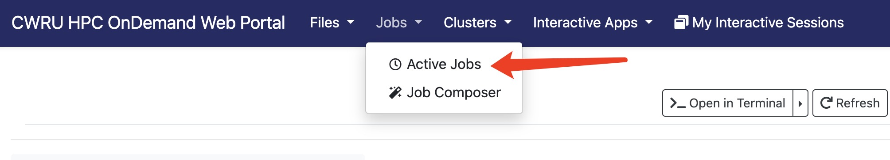

Chapter 1 Getting Started
1.2 Key Areas in CWRU HPC OnDemand Web Portal
The following figures provide a visual guide to key areas within the CWRU HPC OnDemand Web Portal that users frequently interact with.
Home Directory:The location of the Home Directory in the CWRU HPC OnDemand Web Portal.
Active Jobs: Where to view currently running jobs that have been submitted to SLURM. 
Pioneer Shell Access: Where to access the Pioneer Shell to run your code on the HPC cluster.